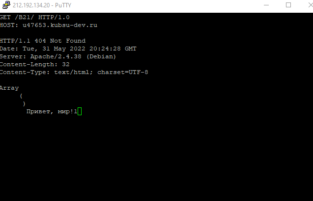
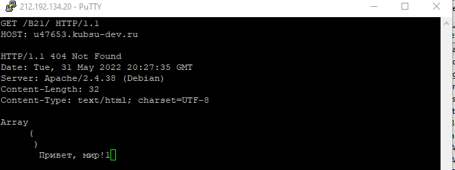
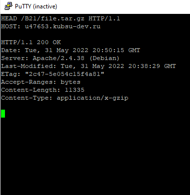
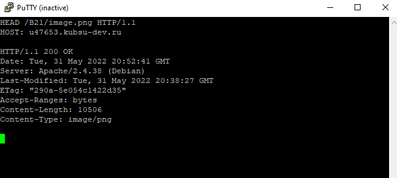
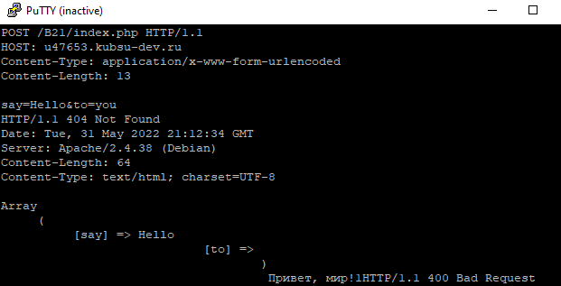
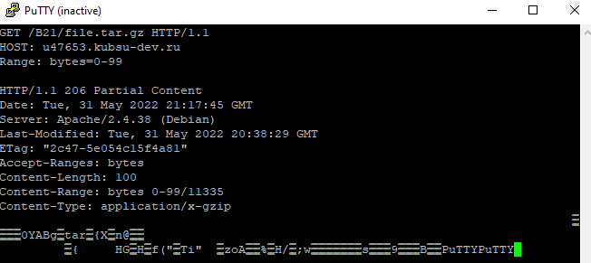
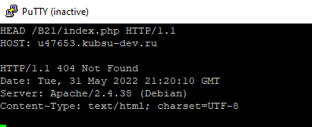

1. получить главную страницу методом GET в протоколе HTTP 1.0:
2. получить внутреннюю страницу методом GET в протоколе HTTP 1.1:
3. определить размер файла file.tar.gz, не скачивая его:
4. определить медиатип ресурса /image.png:
5. отправить комментарий на сервер по адресу /index.php:
6. получить первые 100 байт файла /file.tar.gz:
7. определить кодировку ресурса /index.php:
